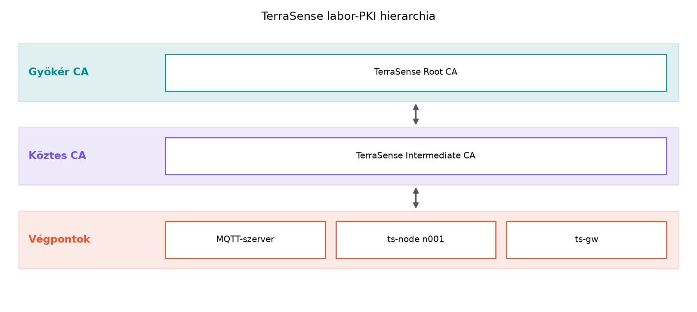

A TerraSense rendszerben a ts-node eszközök és a
ts-gw gateway hamarosan nem egyetlen fejlesztői
környezetben futnak, hanem egy valódi üvegházban. A Mosquitto brokeren
keresztül több tucat vagy több száz eszköz küld telemetriát, és a
backend parancsokat ad lefelé. Ha minden eszköz ugyanazt a jelszót vagy
előre megosztott kulcsot (Pre-Shared Key, PSK) használja, akkor egyetlen
kompromittált eszköz kulcsának kiszivárgása az egész flottát
veszélyezteti. Ráadásul nehéz megkülönböztetni, hogy egy MQTT-üzenet
valóban a gh1/n001 csomóponttól jött-e, vagy egy támadó
csak lejátszotta a PSK-t.
Az eszközidentitás nem csak hitelesítést jelent, hanem azt is, hogy egy adott tanúsítvány vagy kulcs egy adott eszközhöz tartozik, és visszavonható anélkül, hogy a többi eszközt újra kellene kulcsolni. Ezt a problémát a nyilvános kulcsú infrastruktúra (Public Key Infrastructure, PKI) és az X.509 tanúsítványok oldják meg. Ebben az alfejezetben felépítjük a TerraSense labor-CA-ját, kiadunk szerver- és eszköztanúsítványokat, és összevetjük a PSK-alapú identitással. A létrehozott tanúsítványokat a Biztonságos kapcsolat: TLS 1.3, mTLS és DTLS az MQTT/CoAP alatt alfejezet használja a Mosquitto és a kliensek beállításához, a Gyártás és üzembe helyezés (provisioning, onboarding) alfejezet pedig a tanúsítványok eszközre juttatásához.
Definíció. Az X.509 tanúsítvány egy digitális dokumentum, amely egy nyilvános kulcsot egy azonosítóhoz (subject) köt, és amelyet egy hitelesítésszolgáltató (Certificate Authority, CA) ír alá. A tanúsítvány tartalmazza a tulajdonos nevét, a CA nevét, az érvényességi időt, a nyilvános kulcsot és a kiterjesztett mezőket.
Az X.509 v3 tanúsítvány főbb mezői:
Subject: a tanúsítvány alanya, például
CN=n001.gh1.terrasense.Issuer: a kibocsátó CA neve, például
CN=TerraSense Intermediate CA.Serial Number: a CA által egyedileg kiosztott
sorozatszám; visszavonásnál erre hivatkozunk.Validity: notBefore és
notAfter időpont; a tanúsítvány csak ebben az
intervallumban érvényes.Public Key: a tanúsítványhoz tartozó nyilvános kulcs
(például RSA-2048 vagy ECDSA P-256).Signature: a fenti mezők feletti aláírás, amelyet a CA
privát kulcsával készítenek.Extensions (kiterjesztések):
BasicConstraints (CA-e vagy végpont-e),
KeyUsage (aláírásra, kulcscserére, tanúsítvány-aláírásra),
ExtendedKeyUsage (serverAuth, clientAuth),
SubjectAltName (SAN).A gyakorlatban a SubjectAltName a döntő a hoszt
azonosításánál. A Common Name (CN) ma már csak
kompatibilitási okokból létezik; például egy MQTT-szerver tanúsítványnál
a DNS:localhost,IP:127.0.0.1 SAN-nak kell szerepelnie, és
nem elég a CN=mqtt.terrasense.local.
Tanúsítványlánc. Az eszköz tanúsítványát ritkán írja alá közvetlenül a gyökér CA. A gyökér CA privát kulcsát offline, erősen védett helyen tartják; egy köztes CA végzi a napi kibocsátást. A lánc így néz ki:

A fogyasztó (például a ts-node) a tanúsítványt úgy
ellenőrzi, hogy visszafejti a láncot a gyökérig: a végponti tanúsítvány
Issuer mezője a köztes CA-ra mutat, a köztes
Issuer mezője a gyökérre, és minden aláírást a kibocsátó
nyilvános kulcsával ellenőriz. A gyökér tanúsítványt a fogyasztó
megbízható horgonyként tárolja.
Definíció. A PKI (Public Key Infrastructure) a tanúsítványok kiadását, érvényesítését, megújítását és visszavonását szabályozó szervezeti és technikai keretrendszer. A CA-k mellett magában foglalja a regisztrációs hatóságot (RA), a tanúsítványtárakat és a visszavonási listákat.
A visszavonásra két fő mechanizmus létezik:
Az IoT-eszközök esetében mindkét módszernek komoly korlátai vannak: az eszköz gyakran nem rendelkezik megbízható idővel, a CRL túl nagy lehet a memóriához, és az OCSP-kérés késlelteti a kapcsolatfelvételt. A TerraSense esetében ezért rövid érvényességű eszköztanúsítványokat (például 2 év) és az éles rendszerben OCSP staplinget vagy rövid élettartamú, automatikusan megújuló tanúsítványokat érdemes használni.
Definíció. A PSK (Pre-Shared Key) egy előre megosztott szimmetrikus kulcs, amelyet mindkét fél ismer. A PSK-alapú azonosításnál a fél bizonyítja, hogy birtokában van a kulcsnak, például TLS-PSK kézfogásban.
A PSK előnye, hogy számításilag olcsó, és nincs szükség PKI-ra. Hátránya, hogy a kulcsot minden eszközön külön kell tárolni, és ha egy eszköz kompromittálódik, az adott PSK-t vissza kell vonni — de ehhez minden érintett félnél frissíteni kell a kulcsot. Nagy flottánál nehéz egyedi PSK-t menedzselni; ha pedig közös PSK-t használunk, egyetlen kiszivárgás az egész rendszert feltöri.
A tanúsítvány alapú identitás aszimmetrikus: minden eszköznek saját privát kulcsa és egyedi tanúsítványa van. Ha egy eszköz kompromittálódik, a tanúsítványát visszavonjuk, anélkül, hogy a többi eszköz kulcsát módosítani kellene. A tanúsítvány alapú TLS (mTLS) további előnye, hogy a szerver is azonosítja magát, így az eszköz nem csatlakozik hamis brokerhez.
| Szempont | PSK | Tanúsítvány |
|---|---|---|
| Kulcsméret / CPU-igény | kicsi, szimmetrikus | nagyobb, aszimmetrikus |
| Egyedi azonosítás | nehézkes, sok kulcs | természetes, egyedi tanúsítvány |
| Visszavonás | kulcscsere szükséges | CRL/OCSP vagy rövid élettartam |
| Skálázás | közepes | jó |
| Infrastruktúra | nincs | CA, kiadás, megújítás |
| Offline hitelesítés | nem lehetséges | tanúsítványlánc ellenőrizhető |
Definíció. A kulcstárolás az eszköz privát kulcsának védelmét jelenti a kiolvasás, másolás és illetéktelen használat ellen. Az IoT-eszközökön a privát kulcs védelme kritikus, mert a támadó fizikailag hozzáférhet az eszközhöz.
A TerraSense native_sim környezetben természetesen
szoftveres kulcstárolást használunk, de a valós hardver opcionális
kiterjesztésénél legalább egy SE vagy TrustZone-alapú védelmet kell
tervezni.
A TerraSense-ben a PSK helyett tanúsítvány alapú azonosítást választunk, mert:
A tanúsítványok érvényességi idejét rövidre vesszük: a laborban 825 nap (2 év + puffer), éles rendszerben 6–12 hónap. A CA hierarchia legyen kétszintű: a gyökér offline, a köztes CA végzi a kiadást.
A privát kulcsok tárolására a native_sim környezetben
szoftveres tárolást használunk, de a ts-gw valós hardverén
TPM-et, a ts-node-on pedig SE-t vagy TrustZone-t
érdemes.
Munkakönyvtár: ~/iot-labor/i056
mkdir -p ~/iot-labor/i056 && cd ~/iot-labor/i056
mkdir -p ca certsA labor célja, hogy létrehozzuk a TerraSense labor-CA-ját, kiadjunk
egy MQTT-szerver és egy ts-node eszköztanúsítványt,
valamint ellenőrizzük a láncokat. A példában ECDSA P-256 kulcsokat
használunk, mert a TLS 1.3-ban is támogatott, kisebb kulcs- és
aláíráshosszal jár, mint az RSA, ami IoT-eszközöknél előnyös.
# Gyökér CA privát kulcs (ECDSA P-256)
openssl ecparam -genkey -name prime256v1 -out ca/root-ca.key
# Önaláírt gyökér tanúsítvány, 10 év
openssl req -x509 -new -key ca/root-ca.key -sha256 -days 3650 \
-subj "/C=HU/O=TerraSense Lab/CN=TerraSense Root CA" \
-addext "basicConstraints=critical,CA:TRUE" \
-out ca/root-ca.crt# Köztes CA privát kulcs
openssl ecparam -genkey -name prime256v1 -out ca/intermediate-ca.key
# Tanúsítványkérés (CSR)
openssl req -new -key ca/intermediate-ca.key \
-subj "/C=HU/O=TerraSense Lab/CN=TerraSense Intermediate CA" \
-out ca/intermediate-ca.csr
# Aláírás a gyökérrel; pathlen:0 azt jelenti, hogy további CA-t nem adhat ki
openssl x509 -req -in ca/intermediate-ca.csr \
-CA ca/root-ca.crt -CAkey ca/root-ca.key -CAcreateserial \
-days 1825 -sha256 \
-addext "basicConstraints=critical,CA:TRUE,pathlen:0" \
-addext "keyUsage=critical,keyCertSign,cRLSign" \
-out ca/intermediate-ca.crt# Szerver privát kulcs
openssl ecparam -genkey -name prime256v1 -out certs/server.key
# CSR, SAN-nal
openssl req -new -key certs/server.key \
-subj "/C=HU/O=TerraSense Lab/CN=mqtt.terrasense.local" \
-addext "subjectAltName=DNS:localhost,IP:127.0.0.1" \
-out certs/server.csr
# Aláírás a köztes CA-val; serverAuth kiterjesztéssel
openssl x509 -req -in certs/server.csr \
-CA ca/intermediate-ca.crt -CAkey ca/intermediate-ca.key -CAcreateserial \
-days 825 -sha256 \
-addext "subjectAltName=DNS:localhost,IP:127.0.0.1" \
-addext "extendedKeyUsage=serverAuth" \
-out certs/server.crtts-node számára# Eszköz privát kulcs
openssl ecparam -genkey -name prime256v1 -out certs/device-001.key
# CSR; a CN a TerraSense node azonosítója
openssl req -new -key certs/device-001.key \
-subj "/C=HU/O=TerraSense Lab/CN=n001.gh1.terrasense" \
-out certs/device-001.csr
# Aláírás a köztes CA-val; clientAuth kiterjesztéssel
openssl x509 -req -in certs/device-001.csr \
-CA ca/intermediate-ca.crt -CAkey ca/intermediate-ca.key -CAcreateserial \
-days 825 -sha256 \
-addext "extendedKeyUsage=clientAuth" \
-out certs/device-001.crtA kliensek és a broker gyakran egyetlen fájlban várják a láncot: a végponti tanúsítványt, majd a köztes CA tanúsítványát.
cat certs/server.crt ca/intermediate-ca.crt > certs/server-chain.pem
cat certs/device-001.crt ca/intermediate-ca.crt > certs/device-001-chain.pem# Lánc ellenőrzése a gyökér megbízható horgonyával
openssl verify -CAfile ca/root-ca.crt -untrusted ca/intermediate-ca.crt \
certs/device-001.crt
openssl verify -CAfile ca/root-ca.crt -untrusted ca/intermediate-ca.crt \
certs/server.crt
# Alapinformációk
openssl x509 -in certs/device-001.crt -noout -subject -issuer -dates
openssl x509 -in certs/server.crt -noout -ext subjectAltName,extendedKeyUsageA várt kimenet az openssl verify parancsoknál:
certs/device-001.crt: OK
certs/server.crt: OKA tanúsítványok adataiból látszik, hogy a kibocsátó a köztes CA, a
tárgy pedig a megfelelő név. A szerver tanúsítvány SAN-ja
DNS:localhost és IP:127.0.0.1, a kiterjesztett
kulcshasználat TLS Web Server Authentication.
A labor eredményének ellenőrzéséhez a fenti
openssl verify és openssl x509 parancsok
elegendők. A későbbi alfejezetekben a Mosquitto úgy lesz konfigurálva,
hogy a certs/server-chain.pem és
certs/server.key fájlokat, a kliensek pedig a
certs/device-001-chain.pem és
certs/device-001.key fájlokat használják.
| Hibatünet | Ok | Javítás |
|---|---|---|
verify error: unable to get local issuer certificate |
A köztes CA tanúsítványa nincs megadva -untrusted
opcióval, vagy a láncfájl hiányos |
Adja meg a köztes CA-t -untrusted, vagy fűzze össze a
láncfájlt |
verify error: certificate has expired |
A rendszer idő kívül esik a tanúsítvány érvényességi intervallumán | Ellenőrizze a notBefore/notAfter mezőket,
állítsa be a rendszeridőt |
X509_V_ERR_INVALID_CA |
A láncban nem CA tanúsítvány szerepel CA-ként, vagy a
BasicConstraints hiányzik |
Ellenőrizze a basicConstraints=critical,CA:TRUE
kiterjesztést |
| A Mosquitto nem fogadja el a tanúsítványt | A szerver tanúsítványban nincs serverAuth EKU, vagy a
SAN nem egyezik a hosztnévvel |
Adja hozzá a extendedKeyUsage=serverAuth és a megfelelő
SAN bejegyzést |
A CN-t használják hosztnév-ellenőrzésre. A
modern TLS-kliensek a SubjectAltName mezőt ellenőrzik; ha a
tanúsítványban nincs SAN, a kapcsolat hibás lesz, még akkor is, ha a CN
egyezik.
A teljes lánc elküldésének elmulasztása. A kliens csak a végponti tanúsítványt küldi, a köztes CA-t nem. A szerver nem tudja felépíteni a láncot a gyökérig, és elutasítja a kapcsolatot. A láncfájlban a végponti tanúsítványt és a köztes CA tanúsítványát is szerepeltetni kell.
A CA privát kulcs szoftveres tárolása éles rendszerben. Ha a gyökér CA privát kulcsát egy hálózatba kapcsolt gépen tartják, a teljes PKI biztonsága megszűnik. A gyökeret offline, hardveres védelemmel kell tárolni.
Folyamatos OCSP-kapcsolat elvárása IoT-eszköztől. Az eszközök gyakran offline működnek, és nem tudnak minden kézfogásnál OCSP-t kérdezni. Ilyenkor rövid élettartamú tanúsítvány vagy OCSP stapling a helyes megoldás, nem a folyamatos online ellenőrzés.
Magyarázza meg, miért jobb a TerraSense esetében a tanúsítvány alapú azonosítás a közös PSK-nál, ha a flotta 1000 eszközből áll?
Egy tanúsítvány érvényessége 825 nap. Ha a CA minden hónapban kiad egy CRL-t, és a CRL mérete 2000 visszavont tanúsítvány esetén 100 KiB, akkor mekkora CRL-t kell letöltenie egy eszköznek évente, ha havonta frissít? Hogyan csökkenthető ez az adatmennyiség?
Hozzon létre egy második eszköztanúsítványt a ts-gw
gateway számára a laborban megismert módon. A CN legyen
gw.gh1.terrasense, az EKU pedig clientAuth.
Ellenőrizze a láncot a gyökér CA-val.
Távolítsa el a köztes CA tanúsítványt a device-001
láncfájlból, majd futtassa az openssl verify parancsot a
gyökérrel. Milyen hibát kap? Magyarázza meg, miért nem elég a gyökér CA
a lánc felépítéséhez.
A közös PSK esetén egyetlen kiszivárgott kulcs az egész flottát érinti, és a kulccsere minden eszköz frissítését igényli. A tanúsítvány alapú identitásnál minden eszköznek saját privát kulcsa és tanúsítványa van; egy kompromittált eszközt a tanúsítvány visszavonásával lehet kizárni, a többi eszköz változatlanul működik. A tanúsítványokkal a szerver is hitelesíthető, és a mTLS mindkét irányú bizalmat nyújt.
Az eszköz havonta letölt 100 KiB CRL-t, ami évente adatforgalmat jelent. Ez csökkenthető delta-CRL-vel, OCSP staplinggel, vagy rövid élettartamú tanúsítványokkal, ahol nincs szükség nagy CRL-ekre.
cd ~/iot-labor/i056
openssl ecparam -genkey -name prime256v1 -out certs/gw.key
openssl req -new -key certs/gw.key \
-subj "/C=HU/O=TerraSense Lab/CN=gw.gh1.terrasense" \
-out certs/gw.csr
openssl x509 -req -in certs/gw.csr \
-CA ca/intermediate-ca.crt -CAkey ca/intermediate-ca.key -CAcreateserial \
-days 825 -sha256 \
-addext "extendedKeyUsage=clientAuth" \
-out certs/gw.crt
cat certs/gw.crt ca/intermediate-ca.crt > certs/gw-chain.pem
openssl verify -CAfile ca/root-ca.crt -untrusted ca/intermediate-ca.crt certs/gw.crtA várt kimenet: certs/gw.crt: OK.
Ha a gw-chain.pem-ből elhagyjuk a köztes CA
tanúsítványt, és csak az eszköztanúsítványt ellenőrizzük a gyökerrel, az
openssl verify hibát ad:
unable to get local issuer certificate. Ennek oka, hogy a
gyökér CA közvetlenül nem írta alá az eszköz tanúsítványát; a lánc
felépítéséhez szükség van a köztes CA tanúsítványára is, amelynek
aláírását a gyökérrel ellenőrizhetjük.
A TerraSense eszközidentitás alapját a kétszintű labor-PKI adja: a
gyökér CA (ca/root-ca.crt, ca/root-ca.key)
csak a köztes CA-t hitelesíti, a köztes CA
(ca/intermediate-ca.crt,
ca/intermediate-ca.key) pedig a végponti tanúsítványokat.
Létrehoztuk a Mosquitto szerver tanúsítványát
(certs/server.crt, SAN: localhost,
127.0.0.1, EKU: serverAuth) és a
ts-node eszköztanúsítványt
(certs/device-001.crt, EKU: clientAuth),
valamint a láncfájlokat (certs/server-chain.pem,
certs/device-001-chain.pem). A tanúsítvány alapú identitás
skálázhatóbb és biztonságosabb, mint a PSK, de a privát kulcsokat
élesben secure element, TPM vagy TrustZone/PSA védelemmel kell tárolni.
A labor-CA és a tanúsítványok továbbvitt eredményként szolgálnak a Biztonságos kapcsolat: TLS 1.3, mTLS és DTLS az
MQTT/CoAP alatt és a Gyártás és üzembe helyezés
(provisioning, onboarding) alfejezetekhez.